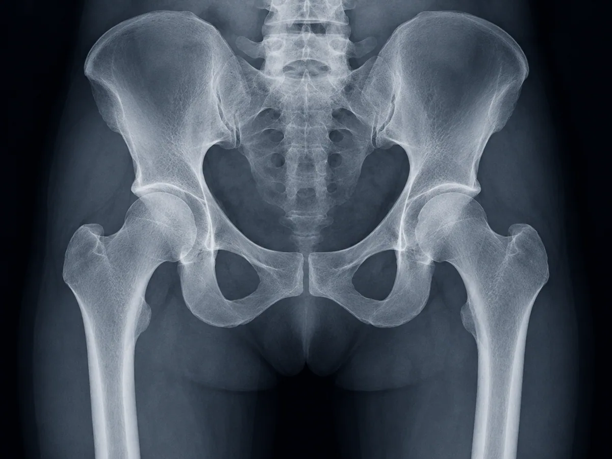

Pelvis y cadera
Las radiografías de pelvis y de cadera pueden corresponder a solicitudes diferentes. Indícanos la región exacta y, si se trata de una cadera, el lado solicitado.
Datos para confirmar tu estudio
- Pelvis, cadera derecha, cadera izquierda o ambas, según la indicación.
- Las proyecciones que aparecen en tu solicitud.
- Cualquier instrucción adicional del médico solicitante.
¿Te solicitaron medición de miembros inferiores?
Consulta nuestra escanometría en León. Es un estudio distinto y debe corresponder a la indicación de tu médico.

Atención y costo
Llama o escríbenos por WhatsApp. Te indicaremos la preparación de tu estudio y los horarios disponibles.
En EcoScan ofrecemos rayos X desde $340 MXN. Es el precio inicial del servicio de rayos X; confirma el importe de este estudio según la región y las proyecciones solicitadas.
El servicio general de rayos X se ofrece sin cita, de lunes a viernes de 8:00 a.m. a 8:00 p.m. y sábados de 8:00 a.m. a 2:00 p.m.
Interpretación médica
Estudio con interpretación por médico radiólogo. Conoce la formación del Dr. César Benavides.